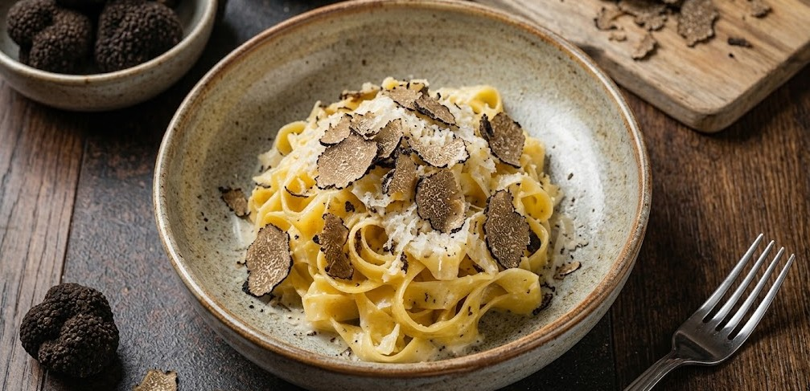
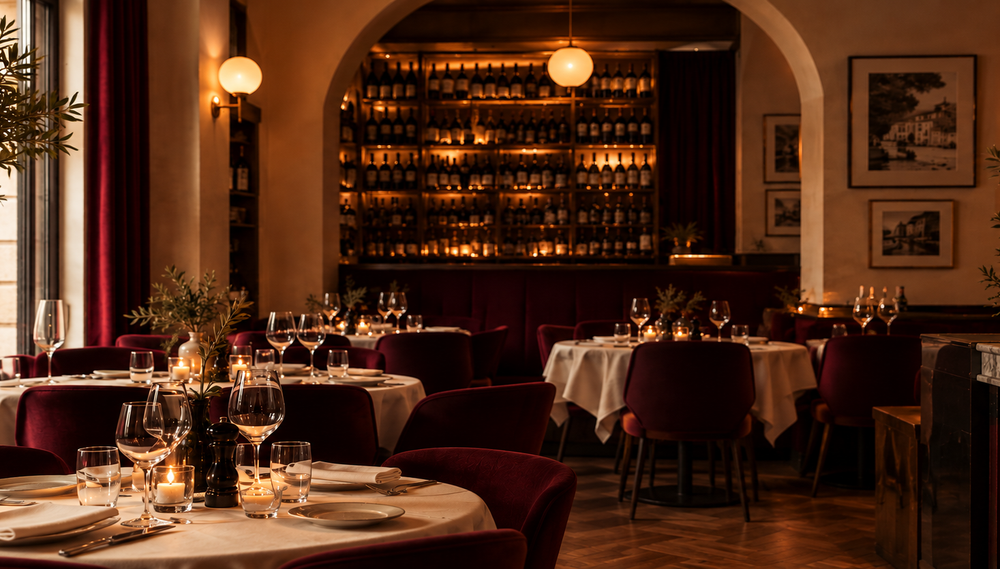
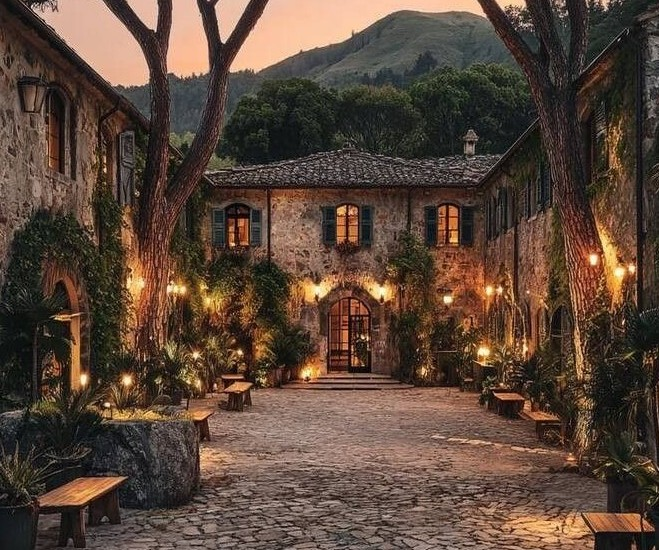
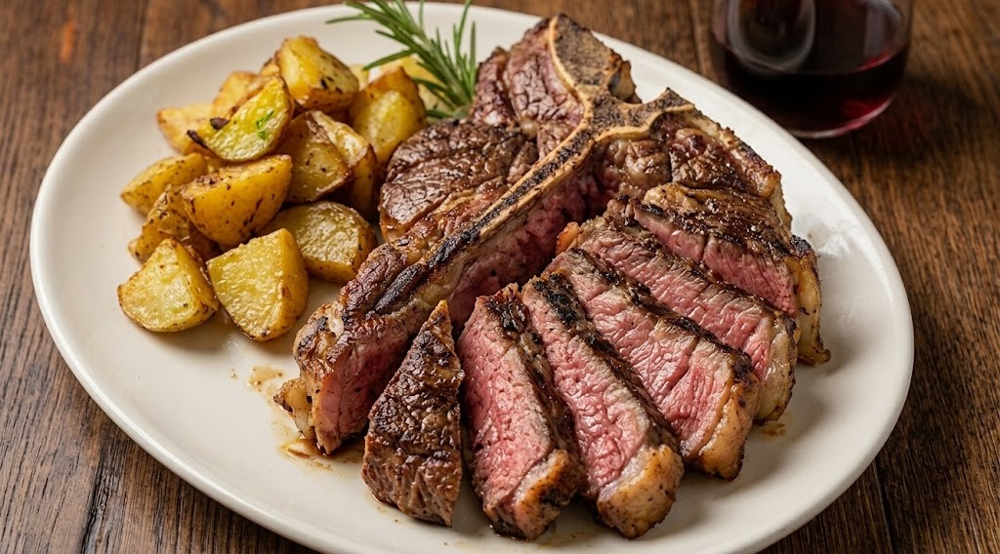

Tagliatelle al Tartufo
Färsk pasta med tryffel, parmesan och grädde.
295 kr

Smak av Italien
Hos oss får du en genuin italiensk matupplevelse med klassiska rätter och noggrant utvalda råvaror direkt från Italien. Vi kombinerar traditionella recept med en passion för kvalitet, smak och gemenskap.
Kontakt →
Utvalda rätter

Färsk pasta med tryffel, parmesan och grädde.
295 kr

Tomatsås, mozzarella, salami och chili.
195 kr

Grillad T-bone med rostade grönsaker.
365 kr

Klassisk dessert med mascarpone och kaffe.
95 kr